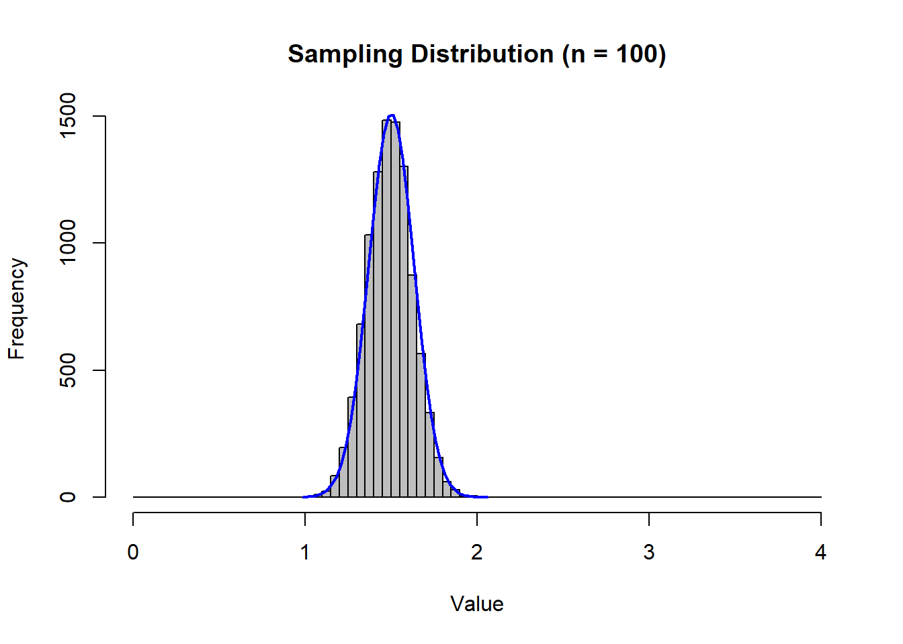

Chapter 5 Confidence Intervals
With the concept of the Central Limit Theorem (CLT) under our belts, we can begin to discuss our first application of statistical inference. The main concept is that when a statistician discusses confidence, they are actually saying how likely something is going to happen. In other words, 95% confidence in a statement means that something is going to happen 95 out of 100 replications. We only get one shot (not 100 replications), so it is the likelihood that it’s going to happen in this one shot.
So in order for us to get into statistical inference, we need to have a refresher on probability. Thanks to the CLT, our probability calculations are going to come from the normal probability distribution.
5.1 A Refresher on Probability
Suppose I give you a random variable \((X)\) and tell you that this random variable comprises a normal distribution with an arbitrary mean equal to \(\mu\) and an arbitrary standard deviation equal to \(\sigma\). We can denote this generally as \(X \sim N(\mu,\sigma)\) and we can draw this generally as
This picture is the normal probability density of this random variable. It is very much like a histogram, only we can consider a continuum of possible numbers (i.e., unlimited number of histogram bins). A normal probability density has several useful properties.
It is centered at the mean. It is a symmetric distribution with 50% of the probability being on either side of the mean.
Like all probability distributions, it must add up to 1 (or 100%). This is like saying that the probability of reaching into a hat full of numbers and pulling out a number between positive and negative infinity is equal to 100%.
A normal distribution has the nice property that approximately 95% of the density area is between two standard deviation above and below the mean. This is the shaded area in the above figure. It roughly states that if you reached into a bowl full of numbers that comprised this distribution, then you have a 95% chance of pulling out a number between \(\mu-2\sigma\) and \(\mu+2\sigma\).
This is very useful, but for our purposes we need to take this arbitrary normal distribution and transform it into a standard normal distribution. We do this by applying what is known as a Z-transformation:
\[Z=\frac{X-\mu}{\sigma}\]
The figure below illustrates how this transformation changes an otherwise arbitrary normal distribution. The top figure is the arbitrary random variable with a mean of \(\mu\) and a standard deviation of \(\sigma\) \((X \sim N(\mu,\sigma))\). The second figure shows what happens to the distribution when we subtract the mean from every number in the distribution. This effectively shifts the distribution such that it is now centered around zero, so we now have a normally distributed random variable with a mean of zero and a standard deviation of \(\sigma\) \((X-\mu \sim N(0,\sigma))\). The third figure shows what happens when we divide every number in the distribution by \(\sigma\). Recall that \(\sigma\) is a positive number that can be greater or less than one. If you divide a number by a number less than one then the number gets bigger. If you divide a number by a number greater than one then the number gets smaller. This means that dividing every number by \(\sigma\) will either increase or decrease the dispersion of values such that the standard deviation is equal to one. A normally distributed random variable with a mean of zero and a standard deviation is said to be a standard normal random variable \((Z \sim N(0,1))\).
Note that this transformation shifts the distribution, but does not change its properties. This was done on purpose to get you to see that a standard normal transformation shifts the mean and alters the dispersion, but does not change the facts that the distribution is still symmetric, still adds to one, and still has the property that 95% of the probability area is between 2 standard deviations to the right and left of the mean.
What does this transformation do? It takes a normally distributed random variable with arbitrary \(\mu\) and \(\sigma\), and transforms the distribution into one with mean 0 and standard deviation 1.
Why is this useful? It can easily be used for numerical probability calculations - but this isn’t as useful nowadays since we have computers. However, this transformation will be essential to put the normal distribution on the same level as other distributions we will soon encounter.
5.1.1 Application 1
Suppose there exists a bowl of numbered cards. The numbers on these cards comprises a normal distribution where the mean value is 5, and the standard deviation is 3. \[X \sim N(5,3)\]
We now have everything we need to calculate the probability of any outcome from this data-generating process. For example, suppose we wanted to determine the probability of reaching into this bowl and picking a number between 2 and 3. In probability terms:
\[Pr(2 \leq x \leq 3)\]
- First we perform a standard normal transformation \(Z=\frac{X-\mu}{\sigma}=\frac{X-5}{3}\), so our probability question gets transformed as well:
\[Pr(2 \leq x \leq 3)=Pr\left(\frac{2-5}{3} \leq \frac{x-5}{3} \leq \frac{3-5}{3}\right)\]
This delivers the same probability question, only in standard normal terms:
\[Pr(2 \leq x \leq 3)=Pr\left(-1 \leq z \leq -\frac{2}{3}\right)\]
- Next we illustrate exactly what this probability question looks like in our distribution. In other words, indicate what slice of the distribution answers the probability question. This slice is illustrated in the figure below by shading in the probability area of the distribution between -1 and \(-\frac{2}{3}\).
- Finally, we calculate the probability in R. Now this is where the illustration above will help get us organized, because we can exploit the distributional properties of symmetry and the distribution summing to one. This is important because we can use R to calculate the same number in several different ways. All of these routes to the answer are acceptable, so we will go through them all here.
First thing to do is introduce you to the R command “pnorm”
pnorm(q, mean = 0, sd = 1, lower.tail = TRUE)The command requires a number (quantity) for the variable q. It will then use a normal distribution with a mean of 0 and a standard error of 1 (by default) and calculate the area to the left of the number q. Note that this is the default action which is given by “lower.tail = TRUE”. If you want to turn off this default action, then you need to set “lower.tail = FALSE” and the command will calculate the area to the right of the number q. For example, we can calculate \(Pr(z\leq-1)\) or the area to the left of -1.
pnorm(-1)## [1] 0.1586553We could also calculate \(Pr(z\geq-1)\) or the area to the right of -1.
pnorm(-1,lower.tail = FALSE)## [1] 0.8413447These two probability areas sum to 1 (as they should), and are illustrated below. The left figure illustrates that 15.9% of the area under the distribution is to the left of -1, so you have a 15.9% chance of picking a number less than or equal to -1. Conversely, the right figure illustrates that 84.1% of the area under the distribution is to the right of -1, so you have a 84.1% chance of picking a number greater than or equal to -1.
Now that we know how R likes to calculate probabilities, we can use it to determine \(Pr(-1 \leq z \leq -\frac{2}{3})\) which is the gray slice of the distribution in the previous figure.
- Using the default setting: suppose you want to calculate all of the probabilities using the default setting of calculating areas to the left. The gray slice of the distribution is then the difference between the area to the left of \(-\frac{2}{3}\) and the area to the left of -1.
\[Pr\left(-1 \leq z \leq -\frac{2}{3}\right)=Pr\left(z \leq -\frac{2}{3}\right) - Pr\left(z \leq -1\right)\]
pnorm(-2/3)-pnorm(-1)## [1] 0.09383728- Removing the default setting. If you want to calculate probabilities from the right (which might come in handy), then the same slice of the distribution is then the difference between the area to the right of \(-1\) and the area to the right of \(-\frac{2}{3}\).
\[Pr\left(-1 \leq z \leq -\frac{2}{3}\right)=Pr(z \geq -1) - Pr\left(z \geq -\frac{2}{3}\right)\]
pnorm(-1,lower.tail = FALSE)-pnorm(-2/3,lower.tail = FALSE)## [1] 0.09383728- Exploiting that the area sums to 1. Yet another way to arrive at the same answer is to calculate the area to the left of \(-1\), the area to the right of \(-\frac{2}{3}\), and arrive at the slice by subtracting these areas from 1.
\[Pr\left(-1 \leq z \leq -\frac{2}{3}\right)=1 - Pr(z \leq -1) - Pr\left(z \geq -\frac{2}{3}\right)\]
1-pnorm(-1)-pnorm(-2/3,lower.tail = FALSE)## [1] 0.09383728As you can see, each procedure delivers the same answer - you have a 9.4% chance of picking a number from a standard normal distribution between -1 and \(-\frac{2}{3}\).
Note that this is the same answer to the original question (before we transformed the distribution). The take away from this exercise is that there are plenty of straightforward ways of calculating probabilities in R, and we will be making a fair amount of use of them.
\[Pr\left(-1 \leq z \leq -\frac{2}{3}\right)=0.094\]
5.1.2 Application 2
Let us look deeper into our dice example. In particular, if I were to roll two fair dice a \(n\) number of times and calculated the average, what range of values should I expect to see?
Recall that the distribution of the population has a mean of 7 and a standard deviation of 2.45. This means that for \(n \geq 30\), the sampling distribution is normal and given by
\[\bar{X} \sim N \left( 7, \; \frac{2.45}{\sqrt{n}} \right)\]
Recall that in this (rare) example, we know the population parameters. Therefore, we can build a range where we expect sample averages to reside.
X <- seq(-4,4,0.01)
Y <- dnorm(X)
plot(X,Y,type="n",xlab="Average Values",ylab = "Density",
yaxt = "n", xaxt = "n", main = TeX('$X \\sim N(7,2.45 / \\sqrt{n})'))
xtick<-seq(-2, 2, by=2)
axis(side=1, at=xtick, labels = FALSE)
text(x=xtick, par("usr")[3],
labels = c(TeX('$7-1.96\\frac{2.45}{\\sqrt{n}}$'),7,
TeX('$7+1.96\\frac{2.45}{\\sqrt{n}}$')),
pos = 1, xpd = TRUE)
i <- X >= -2 & X <= 2
lines(X, Y)
polygon(c(-2,X[i],2), c(0,Y[i],0), col="purple")
So if we collected a sample on \(n=100\), meaning we rolled two dice 100 times, recorded the total each time, and calculated the mean value, then…
\[Pr(7-1.96 \frac{2.45}{\sqrt{100}} \leq \bar{X} \leq 7-1.96 \frac{2.45}{\sqrt{100}}) = 0.95\]
Z = qnorm(0.975,lower.tail = FALSE)
n = 100
mu = 7
sigma = 2.45
(LFT = mu - Z * sigma / sqrt(n))## [1] 7.480191(RHT = mu + Z * sigma / sqrt(n))## [1] 6.519809\[Pr(6.52 \leq \bar{X} \leq 7.48) = 0.95\]
This means that with 95% confidence, your single outcome from your experiment will be within 6.52 and 7.48 if the die you are rolling are in fact fair.
As stated earlier, this example is rare because we know the population parameters. When we don’t, we reverse engineer the probability statement so we can take what we know (the sample statistics) and use them to say something about what we don’t. This is known as a confidence interval.
Further note - I used a new R command above called qnorm. This gets described further below.
5.2 Deriving a Confidence Interval
Recall when we randomly draw a sample from a sampling distribution and use it to calculate a sample mean \((\bar{X})\), we essentially state that a sample mean is random variable. Since the CLT states that the sampling distribution is a normal distribution, then this further states that the sample mean is a normally distributed random variable with a mean of \(\mu\) and a standard deviation of \(\frac{\sigma}{\sqrt{n}}\).
\[\bar{X} \sim N\left(\mu,\frac{\sigma}{\sqrt{n}}\right)\]
We can apply our standardization trick so we have
\[Z=\frac{\bar{X}-\mu}{(\sigma/\sqrt{n})}\]
Suppose we have a sample of size \(n\), calculated a sample mean \(\bar{X}\), and that we know the population standard deviation \(\sigma\) (more on this later). If we know these values, then we can use the standard normal distribution as well as the normalization above to draw statistical inference on the population parameter \(\mu\).
What can we say about \(\mu\)?
Since our sample has the same characteristics as the population, we would like to say \(\mu = \bar{X}\) (i.e., \(Z=0\)), but this is not likely. Recall the dice example discussed earlier, while 7 (the population mean) is the most likely average of a sample, there is a larger likelihood of a sample average close to, but not exactly equal to the population mean.
Since \(\bar{X}\) is a single draw from a normal distribution, we can construct a probabilistic range around \(\mu\). This range requires an arbitrary level of confidence \((1-\alpha)\) - which provides bounds for the Z distribution (i.e., it gives us the area under the curve).
We therefore start with a probabilistic statement using a standard normal distribution:
\[Pr\left(-Z \leq \frac{\bar{X}-\mu}{(\sigma/\sqrt{n})} \leq Z\right)=1-\alpha\]
This states (in general terms) that the probability of realizing a value of \(\frac{\bar{X}-\mu}{(\sigma/\sqrt{n})}\) drawn from a standard normal distributed random variable to be between the values -Z and Z is equal to \(1-\alpha\). To put this into context, suppose I set \(\alpha=0.05\) so \(1-\alpha=0.95\) implies that I am looking for something that will occur with 95% probability. Recall the normal distribution has the nice property that 95% of the probability space is approximately between two standard deviations above and below the mean. By approximately, I mean it is actually 1.96 and not 2. (This explains the 1.96 used in the dice application above.)
Finding these numbers requires another R command: qnorm.
qnorm(p, mean = 0, sd = 1, lower.tail = TRUE)Just like how pnorm takes a quantity and returns a probability, qnorm takes a probability and returns a quantity.
qnorm(0.025)## [1] -1.959964qnorm(0.975,lower.tail=FALSE)## [1] -1.959964\[Pr\left(-1.96 \leq \frac{\bar{X}-\mu}{(\sigma/\sqrt{n})} \leq 1.96\right)=0.95\]
Now back to our statement for a general \(\alpha\) and \(Z\):
\[Pr\left(-Z \leq \frac{\bar{X}-\mu}{(\sigma/\sqrt{n})} \leq Z\right)=1-\alpha\]
Given that the only thing we do not know is the population parameter \(\mu\), we can rearrange the inequalities inside the probability statement to deliver a probabilistic range where we think this parameter will reside.
\[Pr\left(-Z \leq \frac{\bar{X}-\mu}{(\sigma/\sqrt{n})} \leq Z\right)=1-\alpha\]
\[Pr\left(-Z\frac{\sigma}{\sqrt{n}} \leq \bar{X}-\mu \leq Z\frac{\sigma}{\sqrt{n}}\right)=1-\alpha\]
\[Pr\left(-\bar{X}-Z\frac{\sigma}{\sqrt{n}} \leq -\mu \leq -\bar{X}+Z\frac{\sigma}{\sqrt{n}}\right)=1-\alpha\]
\[Pr\left(\bar{X}-Z\frac{\sigma}{\sqrt{n}} \leq \mu \leq \bar{X}+Z\frac{\sigma}{\sqrt{n}}\right)=1-\alpha\]
This statement is a confidence interval, which can be written concisely as
\[\bar{X}-Z_{\frac{\alpha}{2}}\frac{\sigma}{\sqrt{n}} \leq \mu \leq \bar{X}+Z_{\frac{\alpha}{2}}\frac{\sigma}{\sqrt{n}}\]
or
\[\bar{X} \pm Z_{\frac{\alpha}{2}}\frac{\sigma}{\sqrt{n}}\]
It explicitly states that given the characteristics of the sample \((\bar{X},n,\sigma)\) and an arbitrary level of confidence that gives us the probability limits from the standard normal distribution \((Z_{\frac{\sigma}{2}})\), then we can build a range of values where we can state with \((1-\alpha)*100%\) confidence that the population parameter resides within.
Welcome to statistical inference!
5.2.1 Application 3
A paper manufacturer produces paper expected to have a mean length of 11 inches, and a known standard deviation of 0.02 inch. A sample of 100 sheets is selected to determine if the production process is still adhering to this length. If it isn’t, then the machine needs to go through the costs of being taken off line and recalibrated. The sample was calculated to have a average value of 10.998 inches.
\[\bar{X} = 10.998, \quad n = 100, \quad \sigma = 0.02\]
Construct a 95% confidence interval around the average length of a sheet of paper in the population.
- Since we want 95% confidence, then we know that \(\alpha = 0.05\) and we need the critical values from a standard normal distribution such that 95% of the probability distribution is between them. These critical values were calculated previously to -1.959964 and 1.959964 and are illustrated below. Note that since the shaded region is 95% of the central area of the distribution, we are chopping of 5% of the total area from both tails combined. That means 2.5% is chopped off of each tail.
- Now using the positive critical Z value in our confidence interval equation, we have:
\[\bar{X} \pm Z_{\frac{\alpha}{2}}\frac{\sigma}{\sqrt{n}}\]
\[10.998 \pm 1.96\frac{0.02}{\sqrt{100}}\]
Using R for the calculations:
Xbar = 10.998
n = 100
Sig = 0.02
alpha = 0.05
Z = -qnorm(alpha/2) # The '-' sign gives the positive value!
(left = Xbar - Z * Sig / sqrt(n))## [1] 10.99408(right = Xbar + Z * Sig / sqrt(n))## [1] 11.00192\[ 10.99408 \leq \mu \leq 11.00192 \]
Conclusion: I am 95% confident that the mean paper length in the population is somewhere between 10.99408 and 11.00192 inches.
Note that any value within this range is equally likely!
5.2.2 What if we want to change confidence?
If we want to increase the confidence of our statement to 99% or lower it 90%, then we change \(\alpha\) and calculate a new critical Z value. Everything else stays the same.
alpha = 0.01 # increase confidence to 99%
Z = -qnorm(alpha/2) # The '-' sign gives the positive value!
(left = Xbar - Z * Sig / sqrt(n))## [1] 10.99285(right = Xbar + Z * Sig / sqrt(n))## [1] 11.00315alpha = 0.10 # decrease confidence to 90%
Z = -qnorm(alpha/2) # The '-' sign gives the positive value!
(left = Xbar - Z * Sig / sqrt(n))## [1] 10.99471(right = Xbar + Z * Sig / sqrt(n))## [1] 11.00129What happens to the size of the confidence interval when we increase our confidence?
5.3 What to do when we do not know \(\sigma\)
In most instances, if we don’t know anything about the population parameter \(\mu\) then we don’t know anything about any of the other parameters (like \(\sigma\)). In this case, we are forced to use our best guess of \(\sigma\). Since we are assuming that our sample has the same characteristics of the population, then our best guess for \(\sigma\) is the sample standard deviation \(S\).
Put plainly, we substitute the statistic (\(S\)) for the population parameter (\(\sigma\)). Because \(S\) is an estimate of \(\sigma\), this will slightly change our probability distribution. In particular, If \(\bar{X}\) is normally distributed as per the CLT, then a standardization using \(S\) instead of \(\sigma\) is said to have a t distribution with \(n-1\) degrees of freedom
\[t=\frac{\bar{X}-\mu}{(S/\sqrt{n})}\]
Note that this looks almost exactly like our Z transformation, only with \(S\) replaced for \(\sigma\). However, this statistic is said to be drawn from a distribution with \(n-1\) degrees of freedom. We mentioned degrees of freedom before, and we stated that we lose a degree of freedom when we build statistics on top of each other. In other words, we lose a degree of freedom for every statistic we use to calculate another statistic. Consider the standard deviation equation needed to calculate \(S\).
\[S = \sqrt{\frac{1}{n-1} \sum_{i=1}^n(X_i-\bar{X})^2}\]
The equation states that the sample mean \((\bar{X})\) is used to calculate the sample standard deviation. This means one statistic is used to calculate a subsequent statistic… and that is why we lose one degree of freedom.
5.3.1 t distribution versus Z distribution…
A t distribution and Z distribution have very much in common: they are both symmetric, both centered at a mean of 0, and both sum to one (because they are both probability distributions). The main difference is that a t-distribution has fatter tails than a Z distribution, and the fatness of the tails depends on the degrees of freedom (which in turn depends on the sample size).
The figure below compares the standard normal (Z) distribution with several t distributions that differ in degrees of freedom. Notice that tail thickness of the t distributions are inversely related to sample size. As the the degrees of freedom get larger (i.e., the larger the sample size), the closer the t distribution gets to the Z distribution. This is because as n gets larger, \(S\) becomes a better estimate of \(\sigma\).
\[\bar{X}-Z_{\frac{\alpha}{2}}\frac{\sigma}{\sqrt{n}} \leq \mu \leq \bar{X}+Z_{\frac{\alpha}{2}}\frac{\sigma}{\sqrt{n}}\]
\[\bar{X}-t_{(\frac{\alpha}{2},df=n-1)}\frac{S}{\sqrt{n}} \leq \mu \leq \bar{X}+t_{(\frac{\alpha}{2},df=n-1)}\frac{S}{\sqrt{n}}\]
In a nutshell, the only difference encountered when not knowing \(\sigma\) is that we have a slightly different probability distribution (which requires knowing the degrees of freedom and uses a different R command). The new R commands are qt and pt which requires degrees of freedom but otherwise has all of the same properties of qnorm and pnorm discussed above.
pt(q, df, lower.tail = TRUE)
qt(p, df, lower.tail = TRUE)5.3.2 Application 4
Suppose you manage a call center and just received a call from Quality Control asking for the average call length at your facility. They are asking for the average call length in the population, so the best you can do is provide a confidence interval around this population parameter. You select a random sample of 50 calls from your facility and calculate a sample average of 5.8 minutes and a sample standard deviation of 2.815 minutes.
\[\bar{X}=5.8, \quad n=50, \quad S=2.815\]
Calculate a 95% confidence interval around the population average call length.
Xbar = 5.8
n = 50
df = n-1
S = 2.815
alpha = 0.05
t = -qt(alpha/2,df) # The '-' sign gives the positive value!
(left = Xbar - t * S / sqrt(n))## [1] 4.999986(right = Xbar + t * S / sqrt(n))## [1] 6.600014With 95% confidence, the population average call length is between 5 minutes and 6.6 minutes.
As before, if we want to change our level of confidence then we change \(\alpha\) and recalculate the t statistic. Notice that the relationship remains that a lower confidence level delivers a narrower confidence interval.
alpha = 0.01 # increase confidence to 99%
t = -qt(alpha/2,df) # The '-' sign gives the positive value!
(left = Xbar - t * S / sqrt(n))## [1] 4.733108(right = Xbar + t * S / sqrt(n))## [1] 6.866892alpha = 0.10 # decrease confidence to 90%
t = -qt(alpha/2,df) # The '-' sign gives the positive value!
(left = Xbar - t * S / sqrt(n))## [1] 5.132563(right = Xbar + t * S / sqrt(n))## [1] 6.4674375.4 Determining Sample Size
It was previously stated that the sample size should always be as big as possible in order to deliver the most precise conclusions. This isn’t always a satisfactory answer, because collecting observation might be possible (but costly).
How big should n be?
Selecting an appropriate sample size could be determined by many constraints
budget, time, … (things that cannot really be dealt with statistically)
acceptable sampling error (we can deal with this)
Recall our confidence interval equation:
\[\bar{X}-Z_{\frac{\alpha}{2}}\frac{\sigma}{\sqrt{n}} \leq \mu \leq \bar{X}+Z_{\frac{\alpha}{2}}\frac{\sigma}{\sqrt{n}}\]
or
\[\bar{X} \pm Z_{\frac{\alpha}{2}}\frac{\sigma}{\sqrt{n}}\]
The term \(Z_{\frac{\alpha}{2}}\frac{\sigma}{\sqrt{n}}\) is one-half the width of the confidence interval. This is called the sampling error (or margin of error).
\[e = \pm Z_{\frac{\alpha}{2}}\frac{\sigma}{\sqrt{n}}\]
In our previous exercises, we were given a sample size \((n)\) and used our calculations to determine the width of the confidence interval \((2e)\). If we instead wanted to fix the margin of error, then we can let the above identify determine how big our sample size needs to be.
\[n = \left( \frac{Z_{\frac{\alpha}{2}}\sigma}{e}\right)^2\]
Going back to our call center example, suppose that quality control demanded a 95% confidence interval with a 15 second (0.25 minute) margin of error. This means that the 95% confidence interval can only be 0.5 minutes wide. How many calls need to be in the sample?
alpha = 0.05
Z = -qnorm(alpha/2)
Xbar = 5.8
Sig = 2.815
e = 0.25
(n = (Z*Sig/e)^2)## [1] 487.0493# Round up since you can have a fraction of an observation
ceiling(n)## [1] 488Our analysis indicates that if you want this particular a margin of error, then you will need to collect a sample of 488 calls.
You might have noticed that we did something a bit incorrect in the last exercise. What we did was specify a Z distribution and called the sample standard deviation \(\sigma\). Note that only in these sort of applications that determine a sample size is this permissible. The reason is because a sample standard deviation obviously depends on the sample in question. We therefore need to assume that the standard deviation is fixed when calculating the sample size (even though this isn’t the case). Once you determine a sample size, then you collect a sample, calculate the sample standard deviation, and calculate the appropriate confidence interval. The margin of error should be reasonably close to what was required.
5.5 Concluding Applications
5.5.1 Light Bulbs (Last Time)
Let’s go back one last time to our light bulb example
load("C:/Data/MBA8350/Lightbulb.Rdata")
(n = length(Lifetime))## [1] 60(Xbar = mean(Lifetime))## [1] 907.5552(S = sd(Lifetime))## [1] 78.96741We have the following information from our sample:
\[\bar{X}=907.6, \quad n = 60, \quad S = 78.967\]
Use the above information to calculate a 95% confidence interval around the population average lifespan of the light bulbs you have left to sell. You can put this on information on the box!
alpha = 0.05
df = n-1
t = -qt(alpha/2,df)
(left = Xbar - t * S / sqrt(n))## [1] 887.1557(right = Xbar + t * S / sqrt(n))## [1] 927.95465.5.2 Returning to the Philadelphia School Policy Application
Let us return to the Philadelphia school policy example to provide one final discussion of a confidence interval. This application may appear redundant, but it is intended to provide an alternative approach to the confidence interval concept. It has helped students in the past, so it might do some good.
In early February 2020, the city of Philadelphia considered sending out $100 EBT cards to every student registered in public school due to the school closings brought on by the pandemic.
How much would this policy cost?
The Frame
There are 352,272 families in Philadelphia, and the city has records on how many students are registered in public schools.
However, suppose it is too costly (at this stage) to determine the total number of children registered in public schools. If we knew the average number of children registered per family, we can get an estimate of the cost of the policy.
Since it is too costly to examine the entire population (at the moment), we draw a single sample and use the sample to calculate sample statistics. Since the sample is randomly drawn from the population, the sample statistics are randomly drawn from a sampling distribution.
Your Sample
Once you determine a sample size \((n)\), you get one random draw from the appropriate sampling distribution.
The distribution is approximately normal
The mean is \(\mu\)
The standard deviation \(\sigma/\sqrt{n}\)
We use this information and our sample characteristics to say something about the population parameters…
Suppose you select a sample of \(n=100\) families and calculate
\[Xbar = 1.7\]
\[S = 1.5\]
Since we have an estimate of the population standard deviation from our sample, our sampling distribution is now a t distribution with \(n-1 = 99\) degrees of freedom.
\[ t = \frac{\bar{X}-\mu}{S/\sqrt{n}}=\frac{1.7-\mu}{1.5/\sqrt{100}}\]
What we know…
CLT: the true population average is the central point of our sampling distribution
We can choose an arbitrary level of confidence \((1-\alpha)\) to limit where we think our statistic from a single draw will fall.
\[Pr(-t^* \leq \frac{1.7-\mu}{1.5/\sqrt{100}} \leq t^*) = 1-\alpha\]
Suppose we want 95% confidence \((\alpha = 0.05)\)
(tcrit <- qt(0.05/2,99))## [1] -1.984217What we DON’T know…
We don’t know the numerical value of \(\mu\)…
We don’t know where our value of \(\bar{X}\) falls in relation to \(\mu\)
\(\bar{X}=\mu\)?
\(\bar{X}>\mu\)?
\(\bar{X}<\mu\)?
The fact that we don’t know where \(\bar{X}\) is in relation to \(\mu\) is why we end up with an interval around where we think the population parameter resides.
\[Pr(\bar{X}-t^* \frac{S}{\sqrt{n}} \leq \mu \leq \bar{X}+t^* \frac{S}{\sqrt{n}}) = 1-\alpha\]
\[Pr(1.7-1.98 \frac{1.5}{\sqrt{100}} \leq \mu \leq 1.7+1.98 \frac{1.5}{\sqrt{100}}) = 0.95\]


Xbar = 1.7; S = 1.5; n = 100; AL = 0.05
tcrit <- -qt(AL/2,n-1)
(LFT <- Xbar - tcrit * S / sqrt(n))## [1] 1.402367(RHT <- Xbar + tcrit * S / sqrt(n))## [1] 1.997633\[Pr(1.40 \leq \mu \leq 2.00) = 0.95\]
With 95% confidence, the average number of children per family is between 1.4 and 2.
Total cost is between…
\[1.4 * \$100 * 352,272 = \$49,318,080\]
and
\[2 * \$100 * 352,272 = \$70,454,400\]